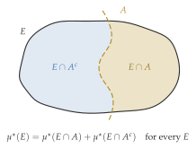

3 Proof of Carathéodory and Uniqueness of Lebesgue Measure
To prove Caratheodory’s theorem, we first need to show that \(\mathcal M\) is a \(\sigma\)-algebra. To do so, it suffices to first show that \(\mathcal M\) is an algebra, and then show that it is closed under countable unions (remind yourself of the definitions from Lecture 1).


Step 1: \(\mathcal M\) is an algebra
(i) \(\emptyset \in \mathcal{M}\) is immediate.
(ii) \(\mathcal{M}\) is closed under complementation since the definition of \(\mu^*\)-measurability is symmetric in \(A\) and \(A^c\).
(iii) We need to show \(A, B \in \mathcal{M}\) implies \(A \cup B \in \mathcal{M}\) (the actual definition for an algebra is that it is closed under finite unions, but it suffices to show it holds for union of two sets by induction) Fix \(E \subseteq X\). Note that:
\[A \cup B = (A \cap B) \cup (A^c \cap B) \cup (A \cap B^c)\]
This is a disjoint union of three regions — sets in both \(A\) and \(B\), sets only in \(B\), and sets only in \(A\) — which together cover everything in \(A \cup B\). Using subadditivity:
\[\mu^*(E \cap (A \cup B)) + \mu^*(E \cap (A \cup B)^c) \leq \mu^*(E \cap (A \cap B)) + \mu^*(E \cap (A^c \cap B)) + \mu^*(E \cap (A \cap B^c)) + \mu^*(E \cap (A^c \cap B^c))\]
Applying measurability of \(A\) to \(E \cap B\) for the first two terms:
\[\mu^*(E \cap (A \cap B)) + \mu^*(E \cap (A^c \cap B)) = \mu^*(E \cap B)\]
and to \(E \cap B^c\) for the last two terms:
\[\mu^*(E \cap (A \cap B^c)) + \mu^*(E \cap (A^c \cap B^c)) = \mu^*(E \cap B^c)\]
Hence the right hand side equals \(\mu^*(E \cap B) + \mu^*(E \cap B^c) = \mu^*(E)\), where the last equality follows from measurability of \(B\). This gives:
\[\mu^*(E \cap (A \cup B)) + \mu^*(E \cap (A \cup B)^c) \leq \mu^*(E)\]
The reverse inequality \(\mu^*(E) \leq \mu^*(E \cap (A \cup B)) + \mu^*(E \cap (A \cup B)^c)\) follows immediately from subadditivity, since \((E \cap (A \cup B)) \cup (E \cap (A\cup B)^c) = E\). Together these give equality, so \(A \cup B \in \mathcal{M}\). \(\square\)
Step 2: \(\mu^\star\) is finitely additive on \(\mathcal M\)
If \(A, B \in \mathcal{M}\) are disjoint, then applying the Carathéodory criterion for \(A\) with test set \(E = A \cup B\):
\[\mu^*(A \cup B) = \mu^*((A \cup B) \cap A) + \mu^*((A \cup B) \cap A^c) = \mu^*(A) + \mu^*(B)\]
where \((A \cup B) \cap A = A\) and \((A \cup B) \cap A^c = B\) by disjointness. Finite additivity for \(n\) disjoint sets \(A_1, \ldots, A_n \in \mathcal{M}\) follows by induction.
Step 3: \(\mathcal{M}\) is a \(\sigma\)-algebra
The only additional criterion imposed by the \(\sigma\)-algebra over the algebra is closure under countable unions.
Since \(\mathcal{M}\) is already an algebra, it suffices to show that if \(A_1, A_2, \ldots \in \mathcal{M}\) are disjoint, then \(\bigcup_i A_i \in \mathcal{M}\). This is without loss of generality since any countable union can be made disjoint via:
\[\bigcup_i A_i = \bigcup_i \left(A_i \setminus \bigcup_{j < i} A_j\right)\]
where each piece \(A_i \setminus \bigcup_{j<i} A_j \in \mathcal{M}\) since \(\mathcal{M}\) is an algebra.
Now define \(B_n := \bigcup_{i=1}^n A_i\) and \(B := \bigcup_i A_i\). Applying measurability of \(A_n\) with test set \(E \cap B_n\):
\[\mu^*(E \cap B_n) = \mu^*(E \cap B_n \cap A_n) + \mu^*(E \cap B_n \cap A_n^c) = \mu^*(E \cap A_n) + \mu^*(E \cap B_{n-1})\]
where we used \(B_n \cap A_n = A_n\) and \(B_n \cap A_n^c = B_{n-1}\) by disjointness. Repeating inductively:
\[\mu^*(E \cap B_{n-1}) = \mu^*(E \cap A_{n-1}) + \mu^*(E \cap B_{n-2})\] \[\vdots\] \[\mu^*(E \cap B_1) = \mu^*(E \cap A_1)\]
Chaining everything together:
\[\mu^*(E \cap B_n) = \sum_{i=1}^n \mu^*(E \cap A_i) \tag{2}\] which is what we would expect (but note that this doesnt follow immediately from the definition of an outer measure, since its only countably subadditive)
where we inserted (2) and then used countable subadditivity of the outer measure to get the inequality in the last line since \(B^c \subseteq B_n^c\).
Using measurability of \(B_n\) together with (2) and subadditivity and definition of B in last step. ### Step 4: Show that \(\mu^\star\) is countably additive on \(\mathcal M\) and thus a measure space Remember that a measure space is the triple \((X, \mathcal M, \mu^\star)\) where \(\mu^\star(\emptyset) = 0\) and \(\mu^\star(\bigcup_i A_i) = \sum_i \mu^\star(A_i)\). \(\mu^\star(\emptyset) = 0\) is satisfied definitionally. From the earlier proof, we had
Now we can take \(E = B\) as defined earlier, and that gives us \(\mu^\star(B) = \sum_{i=1}^\infty \mu^\star(A_i)\).
Step 5: Show that the measure space is complete
A measure space is considered complete if subsets of nullsets are also nullsets, see Lecture 2.
What we want to show is that if we have \(B \in \mathcal M\) where \(\mu^\star(B) = 0\) and \(A \subseteq B\), then \(A \in \mathcal M\), that is, \(A\) satisfies \[\mu^\star(E) = \mu^\star(E \cap A) + \mu^\star(E \cap A^c)\] for any \(E \subseteq X\).
Relationship between the Borel set and \(\mathcal M\).
There are Lebesgue measurable sets that are not Borel sets. We will prove this later.
One way to characterize the Lebesgue measure is to first define it on Borel sets, that is, all sets obtained by countably unions, complements, and intersections, from the open intervals, s.t. it assigns usual length to open intervals. The Lebesgue measure can then be obtained by completing the Borel measure by assigning zero measure to all subsets of Borel sets that already have zero measure. From this perspective, we understand that the Borel sigma algebra is a proper subsets of the Lebesgue sigma algebra (see the earlier lecture). The construction we just derived based on Caratheodory, i.e. \((\mathbb R, \mathcal M, \mu^\star \vert_{\mathcal M})\) is a complete measure space, whereas \((\mathbb R, \mathcal B, \mu^\star \vert_{\mathcal B})\) is not (both measures are identical except they are restricted to different domains). For example, the Cantor set has the same cardinality as the reals, and its powerset (collection of all subsets) has greater cardinality of the reals, which exceed the number of Borel sets. Thus, there are more subsets than \(\mathcal B\) can contain, and thus fails completeness. We have also shown that it is not possible to extend the Lebesgue measure to all \(\mathcal P(\mathbb R)\) while retaining translation invariance and countable additivity. ## The uniqueness of the Lebesgue measure on \(\mathcal B\).
The uniqueness is shown using Dynkin’s \(\pi-\lambda\) theorem.
Applying this to \(X = [0, 1]\) and \(I\) being the set of open intervals implies that there is only one measure on \(([0, 1], B[0,1])\) which agrees with “length” on intervals. Note that the set of open intervals is a \(\pi\)-system, as finite intersections of open intervals remain open. Thus, the Lebesgue measure is the unique measure that assigns length to intervals.
Nonmeasurable sets
It is natural to ask if \(\mathcal M\) (the set of all \(\mu^\star\)-measurable sets) contains all sets, that is, whether all sets are Lebesgue measurable. It will turn out that \(\mathcal M\) can not be everything (assuming the axiom of choice), in particular, it will fail countable additivity under disjoint sets.